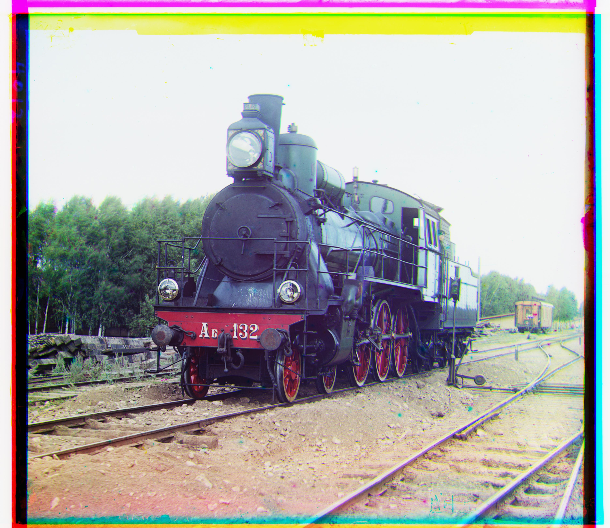

Overview
Sergey Mikhaylovich Prokudin-Gorsky
was a Russian photographer well ahead of his time, known for his pioneering work in color photography of early 20th-century Russia long before we could print colored photography. Imitating human perception of color, he captured black-and-white photographs through different filters. Using red, green, and blue filters the information we need to restore a colored image were thus preserved. In this project we use the digitized RGB glass plate negatives to reconstruct the Russian Empire in color!
To learn more about Prokudin-Gorsky's record click here.
To download other digitized glass plate negatives and run your code or mine click here.
Process
This is a rough overview of the image processing done after extracting the color channel images:
- Align the 3 channels using edge detection and pyramid technique
- Crop the borders of the image
- Adjust the contrast of the image

|


Edge detection
In order to align images we first do edge detection. I do this so that images that
are different in the red, green, and blue color channels look similar. As edges are edges in all channels
the results are better if we align based on them.
As we can see since in the image of the Emir the color values are very different in the different channels at the clothing. If we align based on pixel values we assume that pixel values over different channels are similar if we aligned correctly which is not the case.
However the channels align better if we do a edge detection first.
To do edge detection we first convolve with a 5x5 Gaussian filter to smooth our image in order to reduce our sensitivity to noise.
Then we convolve with the horizontal and vertical Sobel filter to detect horizontal and vertical edges to get the gradients. We then take the gradient of the image to be the magnitude of the horizontal and vertical gradient.
|
|
|
|
1. Alignment
To do alignment we first decimate the image iteratively by 2 until it reaches a feasible size.
Then we find the best alignment based on normal cross correlation (to measure similarity over different channels) over a large inner window, cutting off the outisde borders. We then gradually go to the higher resolution (one less decimation level) and search over a small window that is around the area in which we found the best alignment in the lower resolution window.
For example, if the image is 1600x1600 we decimate to 800x800 then 400x400. If we find the best alignment in the 400x400 image to be at translating the image by x=11,y=3 we then search in the 800x800 image in the window x = [20,24] and y = [4,8] and so on until we have the optimal value for the highest resolution image.

|
|
2. Cutting
To cut we again do a edge detection to detect long horizontal and vertical lines in the borders of the image. We then threshold the values and find the innermost rows and columns with a large mean. These correspond to the innermost rows and columns that have a long edge in them, i.e. the margins of the image. We do this over all channels and cut according to the innermost border accross the channels.
|

|

|
3. Contrasting
To contrast we find the 1st and 99th percentile pixel values in a channel. We then set all values below the first percentile to the same values of the 1st percentile. We also set all values larger than the 99th percentile equal to the value at the 99th percentile. We then rescale the pixel values to be between 0 and 1.

|

|
Whole Process (Slideshow)